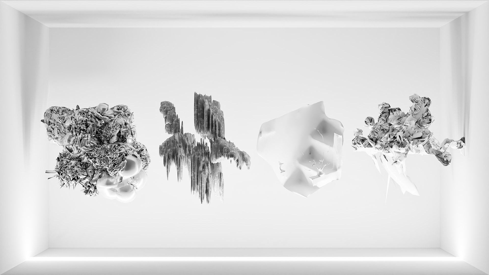

{ BOOOOOOM }
2022. 1.7. - 1. 31.
파주타이포그라피배곳
2021 마친보람 맺음전
Paju Typography Institute
Deobaegot Graduation Exhibition
박태준.파노
Park Taejun.Pano
공기 듣기 - 공기 읽기 : four ambiance of my spaces
Listening to air - Reading air : four ambiance of my spaces
일생 동안 내 주변에 존재하고 있던 소리에 귀 기울이며 그동안 마주쳐왔던 공간들의 앰비언스(Ambience)을 수집하고 정리하여 나온 이미지집과, 음악가와 함께 협업한 앨범으로 구성된 작업이다. 앰비언스는 고유한 나를 이야기하고, 살아왔던 환경의 또 다른 요소로 읽히며, 이러한 가까이 있는 소재들을 가져와 재가공하고 새로운 내러티브를 만드는 과정은 우리에게 익숙한 공간을 이리저리 어그러뜨려 보는 놀이와도 같다.

첫 번째 작업 [공기 듣기 - 공기 읽기]는 작업의 원천이자 영감이 되며 현재 살고 있고, 일했던 총 4개의 공간들을 선정하여 방문하여 수집된 소리, 감정, 상황들을 통해서 만든 이미지들과 글, 사진이 담겨있는 작업이다. 보여지는 4개의 이미지들은 희거나 검으며. 각 이미지의 명칭은 그 공간의 간략한 주소에서 따왔다. 소리는 보이지 않는 것이기에, 복제되고 가공된 것이기에 유동적이고 유연한 성질을 띤다. 이는 만드는 사람의 주관에 따라 얼마든지 다시 바뀔 수 있다. 또한 모두 덩어리의 형태를 하고 있는데, 공간의 분위기, 소리가 발생되는 대상(자연, 인간, 기계 등)의 특질을 금속, 돌, 콘트리트 등을 뒤섞은 질감으로 표현함으로써, 보는 이들이 그 성질을 감각하도록 했다. 또한 그림자를 넣어 공간감을 부여해, 마치 그 덩어리가 진짜 존재하고 있는 것처럼 보이게 했다.

두 번째 작업 [out of phonometry]는 음악가 ‘안벼리’와 만든 프로젝트 팀 ‘paab’의 작업물로 수집된 4개의 공간의 소리들과 분위기로 만들어진 8개의 곡이 수록된 실험적인 앨범이다. 소리는 상대적이고, 불명확하며 자로 잰 듯 측정할 수 없다. 예를 들어 산에서 새 소리를 녹음한다면, 새 안에서 새의 울음 소리 외에도 새의 날갯짓, 부리를 쪼는 소리가 있을 것이며. 외부적으로는 바람소리, 그 바람이 나뭇가지를 흔드는 여러 요소를 담은 소리가 녹음될 것이다. 그러나 청자에게는 다른 소리가 증폭시켜 들리기도 한다. 이렇게 사람에 의해 인지되는 소리들은 어떠한 의도가 있는 체로 들릴수도 있고 다르게 전달될수도 있다. 일상과 공간에서 들어오고 체감되는 소리가 음악이라는 공간속에서 만나 얽매이고 합성되는 결과물은 청자에게 새롭게 다가올것이다.
PDF